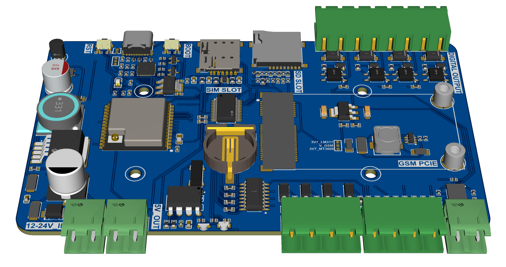
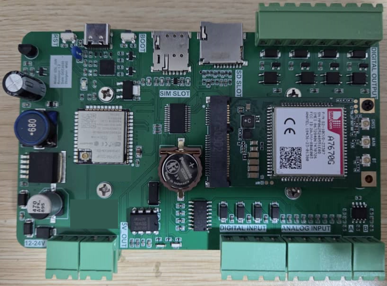
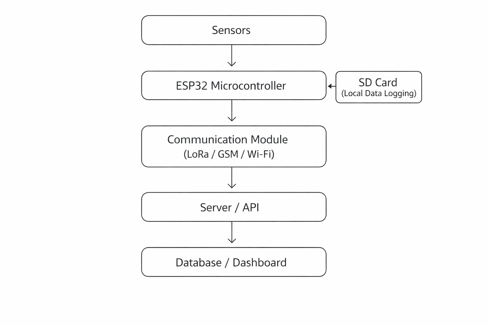
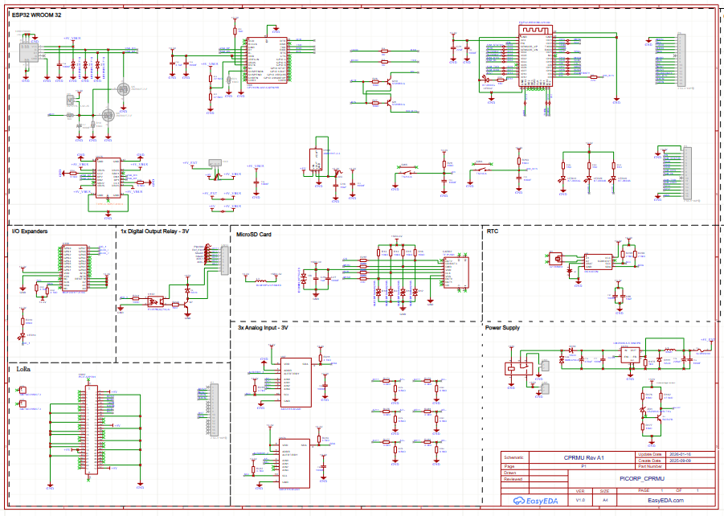
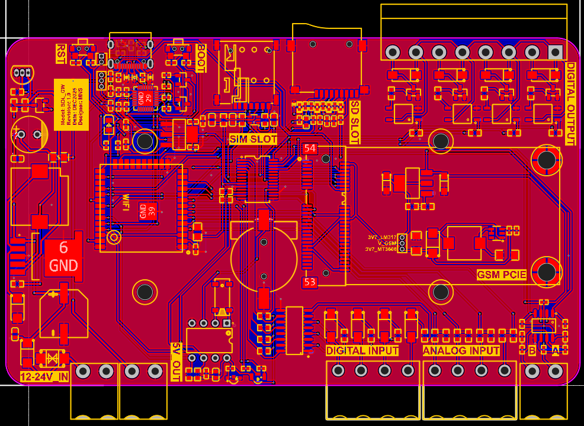
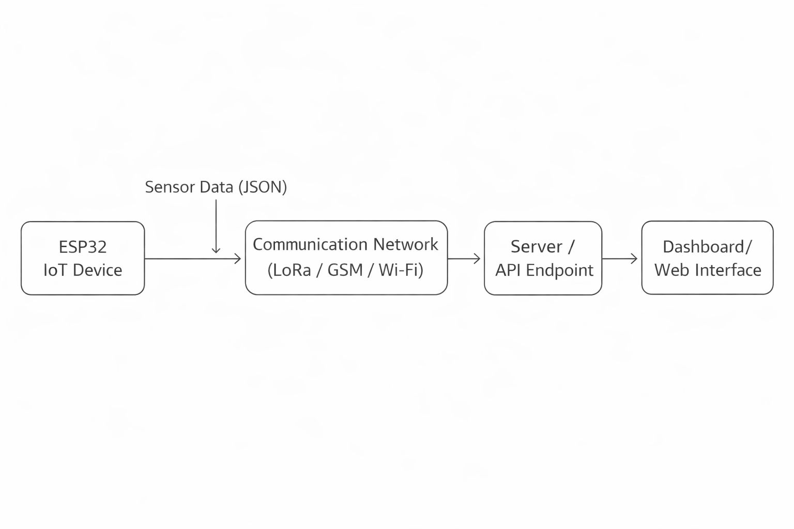
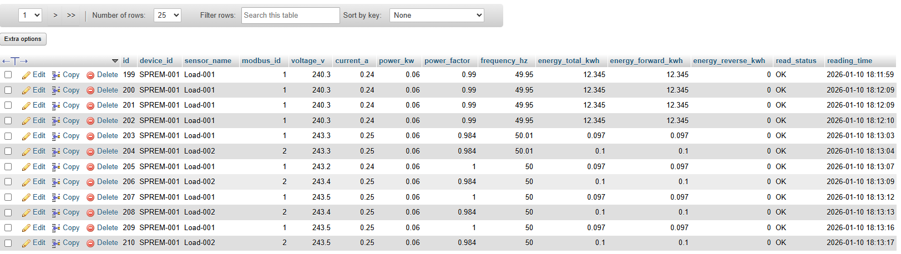
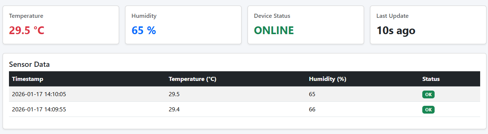

Smart IoT Datalogger
A proof-of-concept ESP32 modular datalogger demonstrating end-to-end IoT system development, from embedded hardware to cloud data handling.
Collect locally. Make readings visible remotely.
The system targets scenarios where sensor data must be collected, stored locally, and transmitted wirelessly for monitoring and analysis.
- Flexible embedded platform based on ESP32.
- Local data logging with remote transmission options.
- Structured firmware design for real-world IoT behavior.
- Hardware, power, and communication trade-off exploration.


Layered system design.
The datalogger separates sensing, processing, storage, communication, and backend components to simplify debugging and future extension.

Flexible controller and interfaces.
The ESP32 was selected for integrated Wi-Fi, multiple peripheral interfaces, community support, and enough processing capability for polling, logging, and communication handling.
- Analog and digital inputs for transducers, switches, and status signals.
- I2C, UART, SPI, and RS-485 Modbus RTU interface options.
- Digital outputs for basic control actions and external triggering.


Backend-ready telemetry.
The communication design focuses on reliability, simplicity, and flexible deployment. Only one communication method is active per configuration to reduce complexity and power consumption.
- LoRa for long-range, low-power remote deployments.
- GSM where local infrastructure is unavailable.
- Wi-Fi for development, testing, or local deployment.
- HTTP POST and MQTT for server or near-real-time monitoring workflows.



What the proof of concept demonstrates.
The documented prototype brings sensing, local storage, wireless communication, and backend monitoring into one system. The photographs and screenshots above show the hardware and data-handling layers.
Scope and limits
This is a learning-focused proof of concept. The public case study does not include measured uptime, battery life, transmission range, or production deployment results. Some implementation details are generalized to respect confidentiality.
Engineering decisions
- Separate the system into layers
- Sensing, storage, communication, and backend components can be examined independently when debugging.
- Keep local storage in the architecture
- The SD card gives data acquisition a local logging path alongside remote transmission.
- Configure one wireless method at a time
- Wi-Fi, GSM, and LoRa serve different deployment constraints. A single active method limits configuration complexity and power demand.
Planning a connected device?
Share your sensing, logging, and connectivity requirements to discuss the scope.